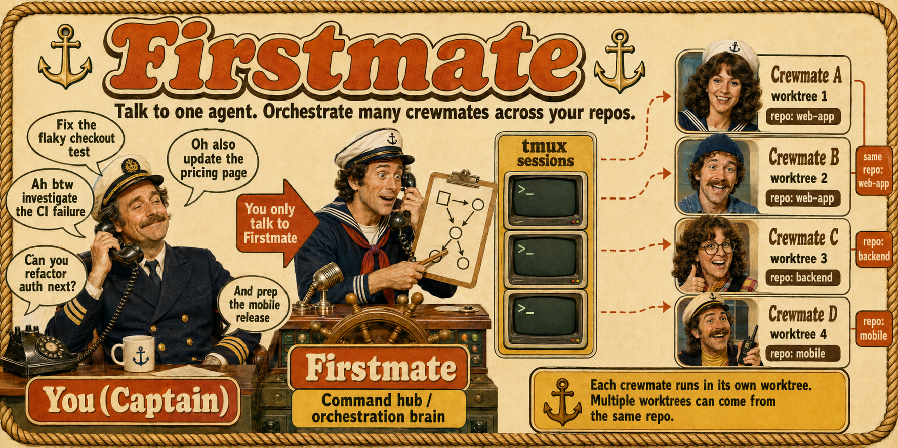

Firstmate for Windows and Copilot CLI
Run a supervised crew of coding agents from the GitHub Copilot CLI environment you already use—without changing operating system or primary harness.

kunchenguid/firstmate.
Compatibility status is published in COMPATIBILITY.md.
This project is not affiliated with or endorsed by the upstream Firstmate maintainers or GitHub.
One attended loop, end to end
Ask the first mate
Describe the outcome. The first mate breaks it into isolated work, delegates it, and returns only decisions and results.
Watch real work happen
Copilot workers run in Herdr sessions with separate Treehouse task copies, so parallel work does not collide.
Review before anything lands
The preview is attended: important decisions, merges, and risky actions remain explicitly human-controlled.
Supported design-partner profile
- SupportedValidated Windows 11 x64 build
- SupportedPowerShell 5.1 bootstrap and PowerShell 7 operation
- SupportedGitHub Copilot CLI as primary and default worker
- SupportedHerdr 0.8.0+ with Treehouse
Transparent boundaries
Windows 10, Server, ARM, WSL-only use, other harnesses, and other session hosts are outside this preview.
Use real, non-critical repositories with active human supervision, normal review, and backups. This is not a production-readiness or unattended-operation claim.
Your first run
Start from PowerShell. The supported installer verifies the exact cohort toolchain and asks before changing external tools.
PS> git clone https://github.com/timbarreto/firstmate.git PS> cd firstmate PS> .\bin\fm-install-windows.ps1 PS> copilot
Suggested first prompt
Add my non-critical repository as a project, then send a scout to explain how its tests are organized. Do not change project files.
A successful first run means
- The Firstmate session starts through Copilot CLI.
- A visible isolated worker session appears.
- The scout returns a useful report.
- No project change lands without your approval.
- You can share a credential-free environment receipt for support.
If anything does not match
Stop and compare your environment receipt with COMPATIBILITY.md. The cohort supports the current gated main, the latest checkpoint, and the previous checkpoint for 14 days.
Updates are announced but never installed automatically.
From Windows developer to Firstmate captain
A design-partner path for developers who already use GitHub Copilot CLI and want one supervised conversation to coordinate multiple isolated coding agents.
-
Check that this preview is for you
Windows 11 x64, PowerShell, GitHub Copilot CLI, Herdr 0.8.0+, Treehouse, and a non-critical repository you can safely explore.
-
Install the validated profile
Clone the community fork and run one PowerShell installer. It verifies pinned tools and asks before changing them.
-
Open Copilot CLI in the Firstmate home
The repository's agent instructions instantiate your first mate. No separate Firstmate app or daemon becomes your primary interface.
-
Give the crew a safe first mission
Ask for a read-only investigation in a non-critical repository. Watch the isolated worker appear and return its report.
-
Confirm the evidence
Share the credential-free environment receipt and tell the cohort what felt clear, risky, or surprising.
What you are joining
This is a design partnership, not a download claim.
You may use real non-critical repositories under active supervision, but the preview does not claim production readiness, unattended operation, broad Windows support, or parity with every inherited harness and session host.
Evidence before confidence
Every commit reaching the rolling supported channel must pass the real Windows/Copilot/Herdr/Treehouse profile gate. Named checkpoints follow a maintainer-and-canary rollout.
Attended, candid use
Use backups and normal review, keep risky work out of scope, update within the support window, and report the exact environment receipt when something breaks.
Why this fork exists
Firstmate for Windows and Copilot CLI closes an access and compatibility gap while preserving Firstmate lineage and observable compatibility with one exact upstream baseline per release.
Independent community fork of Firstmate, based on kunchenguid/firstmate.
Not affiliated with or endorsed by upstream maintainers or GitHub.
Ready to try the attended loop?
The cohort is intentionally limited to 5–10 design partners. Check the supported profile, read the known gaps, and request an invitation through the cohort channel.
Firstmate for Windows and Copilot CLI
Know exactly what was tested, what is supported, and what remains outside the promise before you run agent work against a repository.
Current support contract
| Surface | Status | Design-partner contract |
|---|---|---|
| Operating system | Supported | Validated Windows 11 x64 builds recorded in COMPATIBILITY.md. |
| Primary + worker | Supported | GitHub Copilot CLI with the exact tested version. |
| Session isolation | Cohort supported | Herdr 0.8.0+ with Treehouse; Herdr remains product-level experimental. |
| Shell path | Supported | PowerShell 5.1 bootstrap, PowerShell 7 operation, guarded Git for Windows Bash bridge. |
| Other Windows / WSL | Out of scope | Windows 10, Server, ARM, and WSL-only environments have no cohort support promise. |
| Other harnesses / hosts | Out of scope | The inherited matrix remains in the codebase but is not part of this launch profile. |
Exact SHAs
Every supported state names the exact fork commit and exact validated upstream compatibility baseline.
Real profile automation
Clean Windows, authenticated Copilot CLI, real Herdr and Treehouse, and the actual PowerShell/Git Bash bridge.
Hold-aware updates
Known-bad ranges are blocked; affected partners are offered a guarded rollback to the last-known-good checkpoint.
Install only after the evidence matches
PS> git clone https://github.com/timbarreto/firstmate.git PS> cd firstmate PS> .\bin\fm-install-windows.ps1 PS> copilot
The installer should prove
- Your Windows build is in the supported tuple.
- Required pinned tools are present or explicitly approved for installation.
- No active compatibility hold affects the destination.
- The resulting environment receipt contains no credentials or project data.
First success criterion
Do not define success as “the installer exited zero.”
A successful first run starts Firstmate through Copilot CLI, delegates one read-only investigation to a visible isolated worker, handles the attended supervision loop, returns a useful result, and leaves the project unchanged.
The preview boundary
Reasonable cohort use
- Real, non-critical repositories.
- Active human supervision.
- Normal review and merge approval.
- Backups and a guarded rollback path.
Claims this project does not make
- Production readiness.
- Unattended operation.
- Broad Windows or harness support.
- Official upstream or GitHub endorsement.
Independent community fork based on
kunchenguid/firstmate. Compatibility evidence lives in COMPATIBILITY.md.